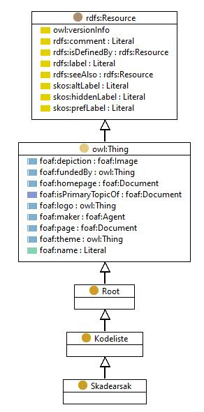

https://ontologi.atlas.vegvesen.no/v441/core/v441-owl#Skadearsak
Class Skadearsak

rdf:type
owl:Class
rdfs:label
Skadeårsak
Damage reason / origin
rdfs:subClassOf
Kodeliste
owl:disjointUnionOf
[
Miljoangrep
,
Utforelsesfeil
,
Annen_eller_ukjent
,
Prosjekteringsfeil
,
Bruksskade
,
Manglende_drift_eller_vedlikehold
,
Belastning
,
Materialfeil
,
Ulykkeslast
]
kode
-
References
as owl:disjointUnionOf (
Kodeliste
)
as rdfs:range (
HarSkadearsak
)
as rdfs:subClassOf (
Materialfeil
,
Belastning
,
Manglende_drift_eller_vedlikehold
,
Miljoangrep
,
Prosjekteringsfeil
,
Ulykkeslast
,
Utforelsesfeil
,
Bruksskade
,
Annen_eller_ukjent
)
Generated with
TopBraid Composer
by
TopQuadrant, Inc.